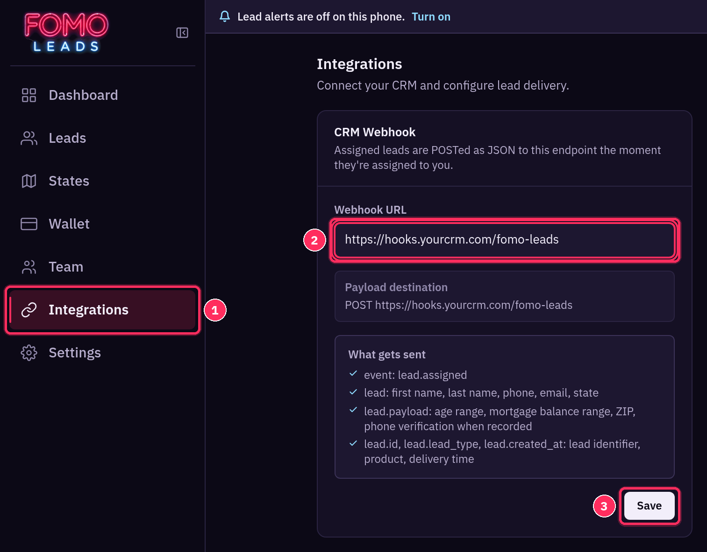
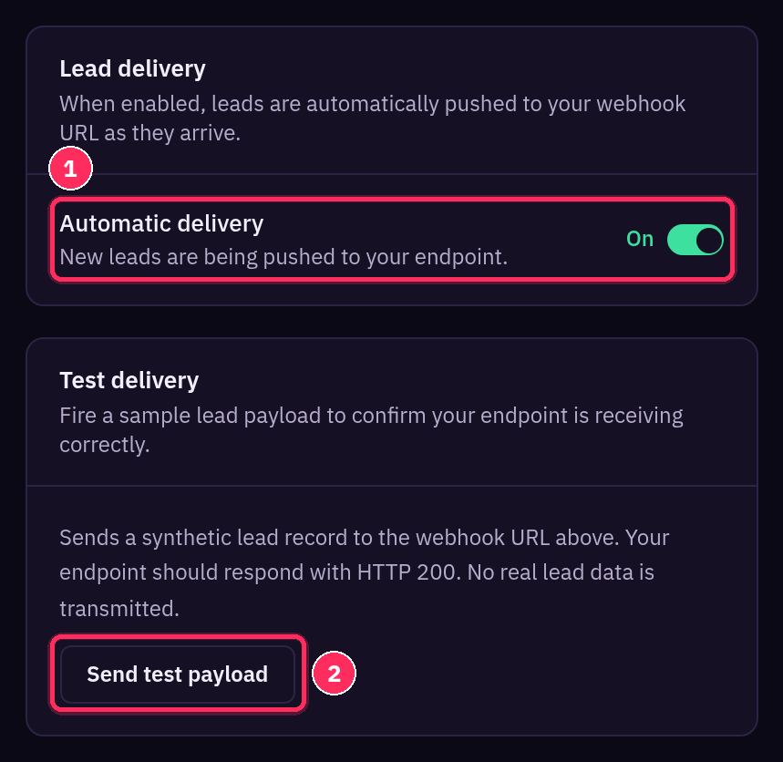
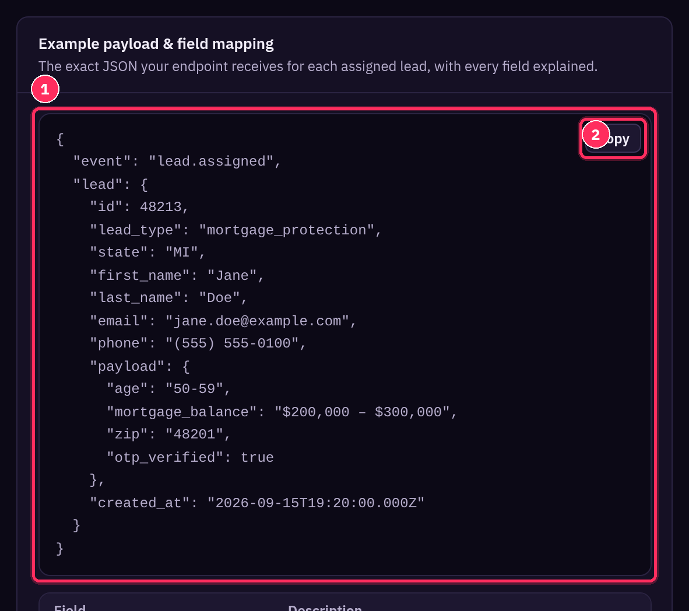
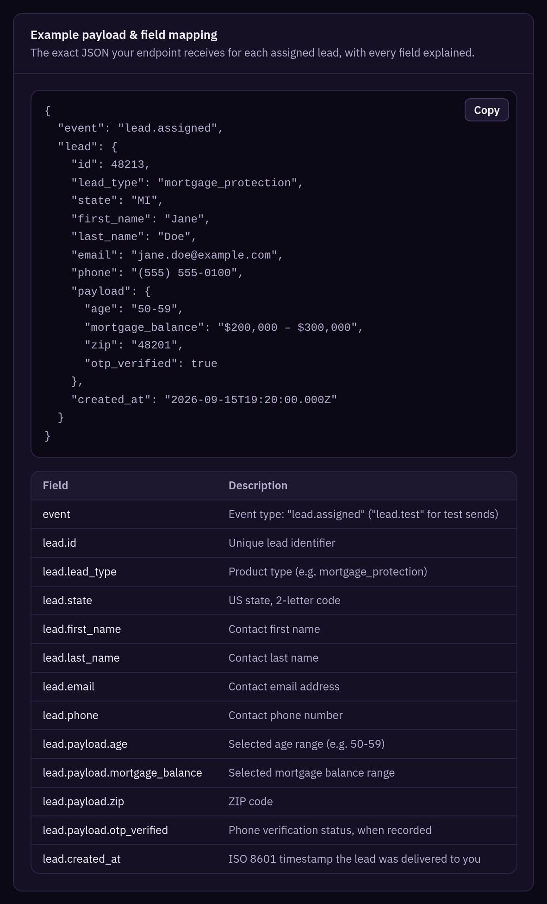
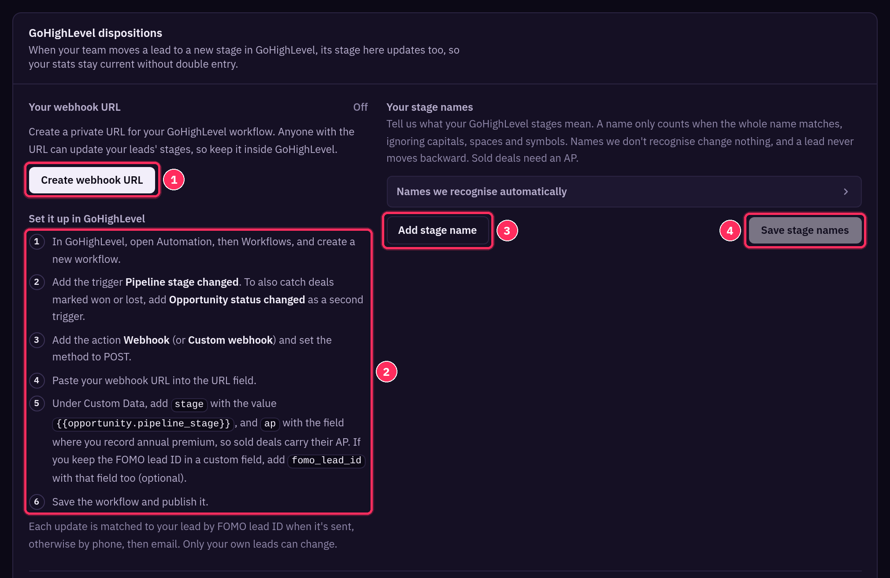
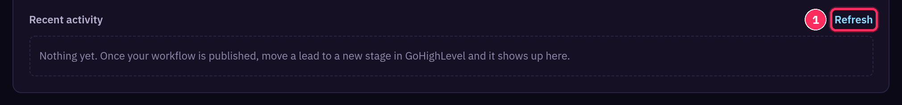

Sending Leads to Your CRM by Webhook
Push every new lead into your CRM automatically, and sync GoHighLevel stages back to Fomo Leads.
Fomo Leads can send every lead to your CRM as JSON the moment it's assigned to you. Set it up in Integrations (https://members.fomoleads.io/integrations).
🔗 1. Connect your CRM webhook
Copy the inbound webhook URL from your CRM, paste it into Webhook URL and click Save. Then send a test.

- In your CRM, create an automation or workflow with an inbound webhook trigger and copy its URL.
- In Fomo Leads, open Integrations from the left menu.
- Paste the URL into Webhook URL and click Save.
- Check that Automatic delivery is On, so new leads are pushed to your endpoint as they arrive.
- Click Send test payload. It unlocks once a URL is saved, and sends a sample lead with the event
lead.test. Your endpoint should respond with HTTP 200. No real lead data is sent.

🧾 2. Map the fields
Real leads arrive with the event lead.assigned. The Example payload & field mapping panel shows the exact JSON. Click Copy to grab it while you map fields in your CRM.

| Field | What it is |
|---|---|
event |
lead.assigned (lead.test for test sends) |
lead.id |
Unique lead identifier |
lead.lead_type |
Product type, e.g. mortgage_protection |
lead.state |
US state, 2-letter code |
lead.first_name / lead.last_name |
Contact name |
lead.email |
Contact email address |
lead.phone |
Contact phone number |
lead.payload.age |
Selected age range, e.g. 50-59 |
lead.payload.mortgage_balance |
Selected mortgage balance range |
lead.payload.zip |
ZIP code |
lead.payload.otp_verified |
Phone verification status, when recorded |
lead.created_at |
ISO 8601 time the lead was delivered to you |

🔁 3. GoHighLevel: sync stages back to Fomo Leads
When your team moves a lead to a new stage in GoHighLevel, its stage in Fomo Leads updates too, so your stats stay current without double entry.

- In GoHighLevel dispositions, click Create webhook URL. This makes a private URL for your workflow. Anyone with it can update your leads' stages, so keep it inside GoHighLevel.
- In GoHighLevel, open Automation → Workflows and create a new workflow.
- Add the trigger Pipeline stage changed. To also catch deals marked won or lost, add Opportunity status changed as a second trigger.
- Add the action Webhook (or Custom webhook) and set the method to POST.
- Paste your webhook URL into the URL field.
- Under Custom Data, add
stagewith the value{{opportunity.pipeline_stage}}, andapwith the field where you record annual premium. If you keep the FOMO lead ID in a custom field, addfomo_lead_idtoo (optional). - Save the workflow and publish it.
- Each update is matched to your lead by FOMO lead ID when it's sent, otherwise by phone, then email. Only your own leads can change.
- Under Your stage names, tell us what your GoHighLevel stages mean with Add stage name, then click Save stage names. Names only count when the whole name matches (ignoring capitals, spaces and symbols), a lead never moves backward, and sold deals need an AP.

- Recent activity shows each update once your workflow is live. Click Refresh to check for new ones.